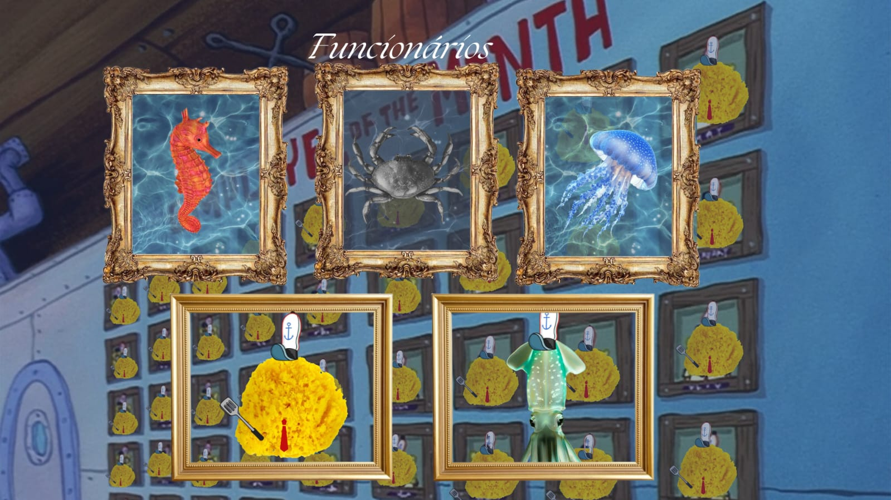
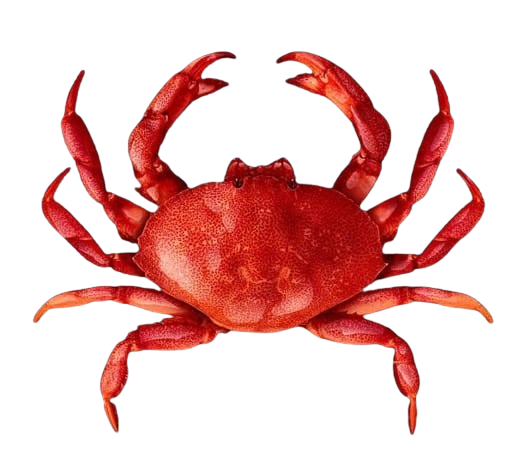
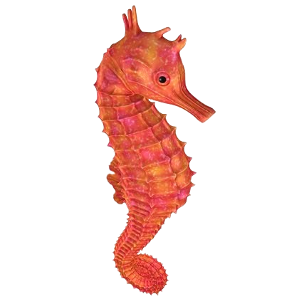

Home
Quem Somos
Desde pequeno, senhor siri-açu queria realizar seu sonho de abrir seu restaurante e alimentar todos os animais marinhos da fenda do maiô,
mas infelizmente, antes de completar essa meta, foi caçado e virou patinha à milanesa. Entretetanto, seu sonho não foi para a panela com ele e suas
duas sobrinhas, Laura nunes e Luiza Brito, abandonaram a faculdade e deram continuidade ao seu sonho.
Hoje, eles são o maior restaurante da fenda do maiô, tendo muitas variedades de pratos e preços acessíveis.

FUNCIONÁRIOS
Hoje, a empresa conta com 4 funcionários: Laura Nunes(cavala marinha programadora, sobrinha de Siri-açu),
Luiza Brito(água-viva designer, sobrinha de Siri-açu) Bob bucha(cozinheiro e amigo do falecido senhor siri-açu), e Polvo-molusco (faz tudo e vizinho de bob bucha).
Antigamente, O siri-açu era um grande funcionário, antes da tragédia da patinha à milanesa.
SOBRE OS DONOS
SIRI-AÇU (Criador)

Nasceu em 1863 e faleceu em 1928. Foi o ser que planejou criar todo esse restaurante. Com sua incrével inteligência e ganância,
pensou em cada detalhe da estrutura e cardápio do Siri Carascudo, mas não conseguiu levar adiante devido á sua morte.
Ele, desde a infância, era caçado por caçadores por causa que sua espécie tinha uma carne deliciosa.
LUIZA BRITO (Designer e fundadora)

Nascida em 1989. Uma água-viva Sobrinha de Siri-açu e prima de Laura Nunes. É responsável pelas redes sociais e pelas imagens/designs do restaurante.
Estava cursando seu segundo período na faculdade conchas e algas, quando recebeu a notícia do falecimento de seu querido tio.
Isso a fez refletir sobre sua vida e ela chegou a conclusão que manter o legado de sua família era mais importante do que um diploma,
por isso, largou a faculdade e contatou sua prima Laura nunes, para que dessem continuidade aos sonhos do tio.
LAURA NUNES (Programadora e fundadora)

Nasceu em 1988. Uma cavala marinha Sobrinha de Siri-açu e prima de Luiza Brito. É responsável pela programação dos sites e aplicativos do restaurante.
Cursava faculdade de Programação Web na faculdade FTM(Faculdade técnica do Maiô) e quando recebeu a mensagem de sua prima
Luiza Brito dizendo que seu tio morreu e que iriam dar continuidade à ideia do Siri Carascudo, ela aceitou sem exitar.
MENÇÕES HONROSAS
JÚNIOR RUGINHAS

Não é um funcionário do Siri Carascudo, mas um grande esquilo que ajudou as meninas a encontrarem os ingredientes para seus pratos.
Júnior Ruginhas é um cantor e ex-mergulhador que ficou preso na fenda do Maiô.
PATRÍCIO

Amigo do Bob Bucha, nosso melhor cliente que todo dia, no fim da tarde, pega nossas sobras e compra os hambúrgueres restantes do restaurante.
Uma estrela sempre sorridente e bobona.